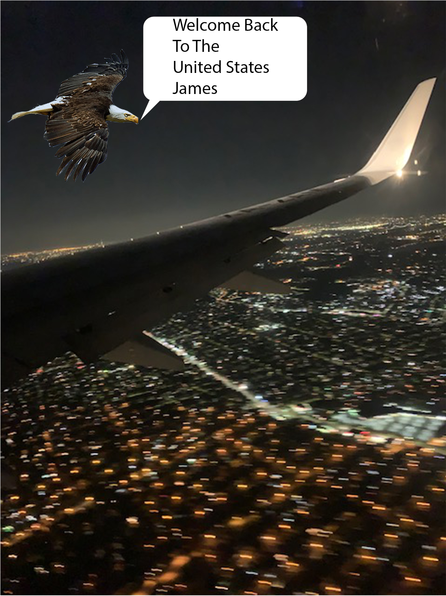

It was my last day in Mexico and it was heartbreaking to say goodbye to everyone. I learned so much from visiting my families village in tulcing. I hope have another chance to visit in the near future. After another six hour riding from Mexico's International Airport all the way back to JFK International Airport, it felt good to be home at last.
